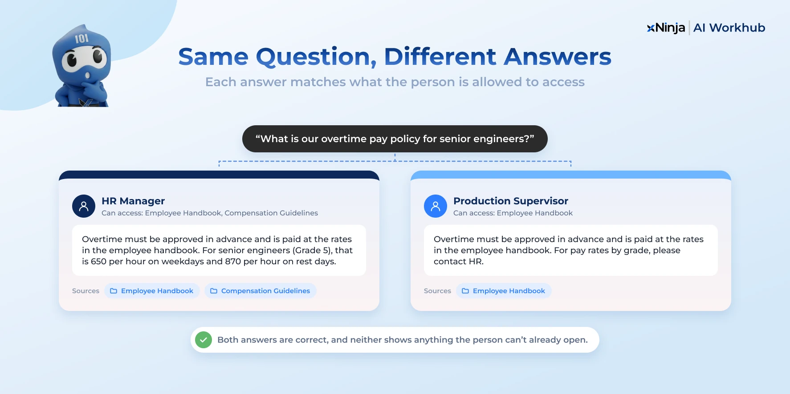

AI makes company knowledge easier to find, but it can also surface information that some employees shouldn’t see. If an AI assistant can search every HR policy, contract, and financial report, one simple question could expose sensitive details to the wrong person. The more knowledge you connect to AI, the more important access control becomes.
The solution is to make AI follow the same permissions as your knowledge system. Before generating an answer, it should check what the user is allowed to access and use only that content. This article explains how permission-based AI answers work, which access rules to set up, and how to keep them accurate as your teams and documents change.
Short Answer
AI answers should follow the same permissions as your documents:
- Search only allowed content. The AI uses only what the person asking can open.
- Check access first. Permissions are applied before the answer is written.
- Show sources. Each answer lists the documents it came from.
- Stay silent on restricted files. The AI never reveals that they exist.
Why AI needs the same permissions as your documents
Most companies already control who can open which folders. HR files, salary data, contracts, and board reports are usually limited to a few people. An AI assistant changes how that information is reached: instead of opening a file, an employee simply asks a question, and the AI pulls the answer from whatever it can search.
If the AI can search everything, it becomes a shortcut around your existing access rules. A question like “What did we pay the last sales manager we hired?” could return salary details from an HR file the employee could never open directly. Even a short summary can reveal too much, because the sensitive detail is in the answer, not the file.
How permission-based AI answers work
A permission-aware AI assistant checks access before it answers, not after. A typical flow looks like this:
- Ask. An employee signs in and asks a question.
- Identify. The system checks their role, department, and projects.
- Search. The AI looks only in the documents and folders that person can open.
- Answer. It writes the answer from those sources and shows which documents it used.
- Stay silent. If the answer exists only in restricted content, it says it can’t find the information, without revealing that a restricted document exists.

Which access rules to set up
Start with the structure you already have, then add detail only where you need it. Most organizations combine four kinds of rules:
- Role: Managers, employees, and administrators see different levels of detail.
- Department: HR, Finance, Sales, and Production each own their folders.
- Project or site: Teams working on a specific customer, product, or factory can access its documents.
- Sensitivity level: Label documents as Public, Internal, Confidential, or Restricted, and decide who can use each level.

Keep the number of rules small. Folder-level permissions are easier to manage than setting access file by file, and they make it clear where new documents should go.
Example: same question, different answers
Imagine two employees ask the AI assistant the same question: “What is our overtime pay policy for senior engineers?”
An HR manager can access both the employee handbook and the compensation guidelines, so the answer includes the general policy and the pay rate for each grade. A production supervisor can access only the employee handbook, so the answer explains the general policy and suggests contacting HR for pay details.

Both answers are correct. Neither employee sees anything they couldn’t already open, and nobody has to maintain a separate AI just for HR.
How to keep permissions accurate
Access rules only work if they stay up to date. People change roles, projects end, and new documents are added every day.
- Sync with your employee directory: Role and department changes apply automatically.
- Remove access on the last day: Include access to the AI assistant.
- Use folder inheritance: New documents take their folder’s permissions instead of being set one by one.
- Review every quarter: Check sensitive folders with each department owner.
- Keep a record: Log questions and the sources used, so you can check what the AI shared if a concern comes up.
Common mistakes to avoid
Connecting the AI with an administrator account. The AI then sees everything, and every user effectively gets that access.
Relying on instructions alone. Telling the AI “don’t share salary information” is not access control. If the data is searchable, it can still appear in an answer.
Copying files into one shared folder for the AI. This removes the original permissions and leaves outdated duplicates behind.
Forgetting old versions and attachments. Earlier drafts and email attachments often contain the same sensitive details as the final file.
How xNinja helps you control AI answers
xNinja.Knowledge Management helps you create, organize, and manage company knowledge, with access control built in:
- Permissions by knowledge type: Set access levels for each type of knowledge to protect critical company information.
- Answers from authorized sources: AI responses are generated from the knowledge sources each person is permitted to access.
- AI search, summaries, and recommendations: Employees find the information they need faster.
- One place for internal knowledge: Keep SOPs, manuals, guidelines, and FAQs together.
Learn more about xNinja.Knowledge Management.
Start with your most sensitive folders
You don’t need to label every document on day one. Start with the folders that hold salaries, contracts, and personnel records, confirm who should see them, and connect AI only after those rules are in place.
Book a demo to see how xNinja answers questions based on each employee’s own access.